Uinke Travel Guide
Mawphlang
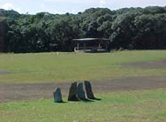
Location: East Khasi Hills District
One of the most remarkable features of the Khasi Hills are the sacred forests, which have been preserved by traditional religious sanction, since the ancient days. One of the most famous sacred forests is the Mawphlang Sacred Forest, about 25 kilometres from Shillong. The sacred grove has an amazing life form of plants, flowering trees, orchids and butterflies. An ideal destination for nature lovers.
The sacred-groves which have been preserved since time immemorial, are in sharp contrast to their surrounding grasslands. These groves are generally rimmed by a dense growth of Castanopsis kurzii trees, forming a protective hedge which halts intrusion of Pinus kasia (Khasi pine) which dominates all areas outside the sacred groves. Inside the outer rim, the sacred groves are virtually Nature's Own Museum. The heavily covered grounds have a thick cushion of humus accumulated over the centuries. The trees in every sacred groveare heavily loaded with epiphytic growth of aroids, pipers, ferns, fern-allies and orchids. The humus-covered grounds likewise harbour myriad varieties of plant life, many of which are found nowhere else.
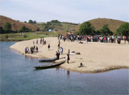
Nongkhnum Island
Location: West Khasi Hills District
Nongkhnum Island is the biggest river island in Meghalaya and the second biggest river island in Asia, after Majuli Island in Assam. Located about 14 Kms from Nongstoin, the district hqs. of West Khasi Hills, it is 20 to 25 sq. kms in area. Travelling on foot from Nongstoin through the villages of Lawse, Mawduh and Mawthar, it takes about two and a half-hours to reach the Island. There is a wooden bridge over the Weinia Fall to enter the Island.
The Island is formed by the bifurcation of Kynshi River into the Phanliang River and the Namliang River. At the point of divergence, there is a beautiful sandy shore about 100 sq. meters in area. The Phanliang River forms a beautiful lake adjacent to the sandy beach. This lake is about 400 to 500 sq. meters. The River then moves along and before reaching a deep gorge, forms a pretty fall about 60 meters high, called Shadthum Fall. At the bottom of the fall, there is a beautiful pool where a variety of fishes can be found. It then continues its journey and finally reunites with the Namliang River, near a place called Thongrin.
The Namliang River first flows towards the north and then changes its course towards the west. It then reaches a gorge and forms two narrow falls. The first one is called Riatsohkhe fall and is near Mawthar village. The second one is the wonderful and beautiful Weinia fall, which is about 60 meters high. The River then flows further west till it reunites with the Phanliang River on the western rocky shore and then flow towards the west. After a distance of about 10 kms from the Island, it reaches the deepest gorge and forms the longest fall in the region of about 335 to 340 meters high, called Langshiang fall.
The area surrounded by the two Rivers, i.e. Phanliang and Namliang forms the Nongkhnum Island. Within the Island, there are big trees and areas of grassland and natural playground suitable for playing football and golf and even for landing a helicopter. There are plenty of fishing pools, especially near the sandy shore, called Wei-Phanliang. Angling is the only way to enjoy as well as protect the fishes.
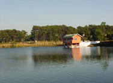Thadlaskein Lake
Location: West Jaintia Hills District
8 k.m.. from Jowai on National highway - 44 is a man made lake at Thadlaskein fed by a Perennial spring. According to tradition, one Chieftain Sajar Nangli had an irreconcilable difference with the King of Jaintiapur. Not wanting to be blamed for an inevitable bloodbath he decided to flee from the Kingdom with his followers. Before his departure, however, they dug the present day lake with the ends of bows as a memorial. The lake is revered by the people of Raid Mukhla who continue to offer sacrifices near the Lake. A popular picnic spot for locals.
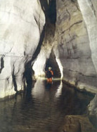Umlawan Cave
Location: East Jaintia Hills District
The sleepy hamlet of Lumshnong village came into lime-light recently when it has been confirmed that the Umlawan cave situated in this village is the longest and also the deepest in the sub-continent. The Umlawan cave is interconnected with two other caves namely Kot-Sati and Umskor caves. The total length of these caves is more than 21 kms and about 100 m in depth. This place is 60 kms east of Jowai. Dotted across the entire district there are numerous caves and caverns with spectacular stalagmites and stalactite formations. Till now only a few of these caves have been explored and surveyed.
Tura Peak
Location: West Garo Hills District
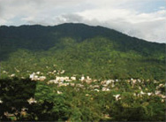
A beautiful and majestic hill stands on the eastern side of Tura at a height of 872 m above sea level overlooking the town of Tura. Local legend has it that the peak provides a sacred shelter or abode to the ‘Gods’ and it is also claimed that Tura was traditionally known as Dura, but due to mispronunciation by the British gave it the present name of Tura. The Tura range has been declared a reserve forest with an observatory, a Cinchona plantation and a tourist bungalow located at its vicinity. A magnificent view of the lower Brahmaputra valley as well as the golden yellow plains of Bangladesh can be seen all year round from the peak. A foot-track or path developed during the British Raj is still in existence and can be used by tourists and adventurers alike to reach Tura peak with ease and comfort.
Nokrek Biosphere
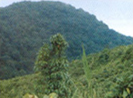
Location: West Garo Hills District
About 40 kms, via Asananggiri and Sasatgiri but just 2 kms. from Tura peak; teeming with wild life, Nokrek hill is the home of a very rare species of citrus locally known as Memang Narang orange of the spirits. This Memang Narang is considered to be the most primitive and progenitor of all other varieties of citrus plants in the world with a view to preserve this rare species of citrus indica the first gene sanctuary of the world has been established here.
Pelga Falls
Location: West Garo Hills District
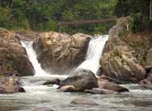
Pelga falls located at the distance of 7 kms from Tura has become increasingly hot spot for anglers and picnickers in recent years. The tourism department developed this place by constructing a footpath and view point. A typical traditional Garo bamboo bridge constructed over Ganol river is another added attraction.
Nengkong
Location: South Garo Hills District
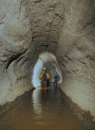
14 kms north of Baghmara is the well known caves Tetengkol, which balwakol measuring 5,33kms in length is one of the longest cave in the Indian Sub-continent. The other cave is Dobakkol Chibe Nala almost 2kms long and another, a little over 1 km long called Bok-bak dobakkol are also in the vicinity of the area.
Balpakram
Location: South Garo Hills District
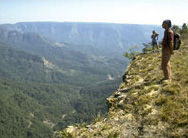
The literal meaning of Balpakram is the "land of perpetual winds". There is a great precipice or deep gorge in Balpakram and is popularly compared to the Grand Canyon of U.S.A. It is believed that here, the spirits of the dead dwell temporarily before embarking on the final journey. Balpakram is sacred to the Garos as the abode of the dead spirits. As mentioned earlier, the Garos are deeply spiritual and believe in myths as interesting and awe-some as the Greeks mythlogics. In support of their beliefs, Balpakram has many mysterious and unnatural phenomena that cannot be satisfactorily explained by modern science and logic.
Some of these mysterious sites are Boldak matchu karam, Chidimak, Matchru, Areng patal, Goncho Dare, Dikkini ring, Rongsaljong Agal, Rongsobok Rongkol.
Apart from the above mentioned sites there are many mysterious places which you can explore yourself. Indeed Balpakram is so steeped in myths that even the Hindus believe that it is a sacred place. They believe that when Laxman was seriously injured during the war with Ravana and a very rare life saving herb was required, Hanuman found it here but not knowing which to take also in his haste to return, broke the top of the hills and carried it away. The missing portion of that hill became a deep awning canyon. Balpakram has been declared a National Park some years ago. This place is about 220 sq kms in area and is 167 kms from Tura. This place is not only of mythological importance but also the natural habitant of many rare and exotic animals and plant life. It is also believed to be the original home of the rare citrus plant Me-mang Narang. Balpakram is exquisitely beautiful when ground orchids are in bloom. The best time to see is from November to March. There is the guest house at Hattisil at the entrance to Balpakram run by the Forest Department.
Kodaldhowa Lake
Location: South West Garo Hills District
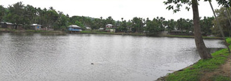
Situated at about 8 kms from Zikzak, is the famous Legendary Lake known as Kodaldhowa. It is said this tank was excavated to wash the spades everyday while digging kata beel. The locals in Hajong language called this tank Kodaldhowa which means “Kodal” spade and “Dhowa” means wash Kodaldhowa spreads over an area of 14 bighas of land. Nearby the lake is a small temple which has a small underground shaft used only during religious ceremonies. This temple is a huge attraction for the tourist and ever year hundred of people flock to this temple during the annual mela.
Balupara Confluence
Location: West Garo Hills District
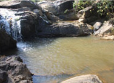The Balupara Confluence of two rivers lie at the village of Balupara, located just behind the area chosen as permanent site for the Achik Baptist Dalgipa Krima (ABDK) Sobha. The Sobha is an annual conference held among all the Achik Baptist Churches of Meghalaya, Assam and sometimes even Bangladesh. During these conferences foreign speakers and visitors often take part. Thus developing this site would be a platform to attract both foreign and national tourists as well. The ABDK has planned a project that includes constructing a huge conference hall, guest houses and a recreational centre which can be rented throughout the year for meetings, retreats, weddings, etc.
This area also lies in the Songsarek circuit of Babdam-Chidaogre-Sadolpara which are frequented by researchers from various parts of the world to study the Animist culture of these villages. The Balupara confluence is located about 22 km from Tura, and is ideal for picnics. A roads are being constructed almost upto the point of confluence. It also has a waterfall of about 7-8 feet high.